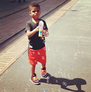

Kira23333的个人主页
联系方式：
- 新浪微博：_________Kira
- 人人网：曾小华
- E-mail: thsszh@hotmail.com
What hurts more,
the pain of hard work, or the pain of regret?关于我
- 全名：曾华
- 中文名：曾华
- 英文名：Kira
- 国籍：中华人民共和国
- 出生地：广东 中山
- 生日：1992年12月29日
- 星座：摩羯座
- 教育程度：本科就读
- 就读学校：五道口职业技术学院
- 就读院系：软件学院
- 毕业高中：中山纪念中学
- 宗教信仰：无
- 系内足球赛数据：6场3球
- 掌握语言：普通话、英语、粤语、pascal、c、c++、javascript
- 兴趣：LAC、Chris Paul、Chris Paul Jr.、NBA
- 喜欢的足/篮球风格：速度、精简、实用、意识
- 喜欢的工作态度：效率、直接、方法、认真
- 喜欢的组合：Maroon 5
- 喜欢的歌手：Katy Perry
- 喜欢的唱片：Maroon 5的《Song About Jane》
- 喜欢的演员：Brand Pitt、Tom、Cruise、Christian Bale
- 最喜欢的导演：Christopher Nolan
- 最喜欢的电影：《蝙蝠侠前传：黑暗骑士》
- 最喜欢的电视剧：《无耻之徒》
- 正在玩的游戏：部落战争、炉石传说
- 未完待续